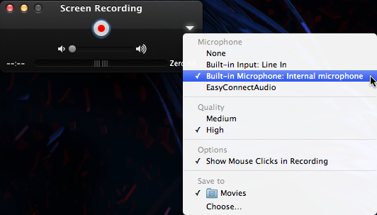
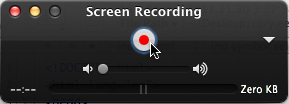
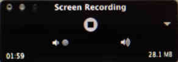
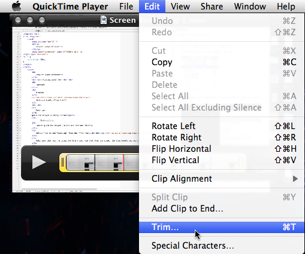
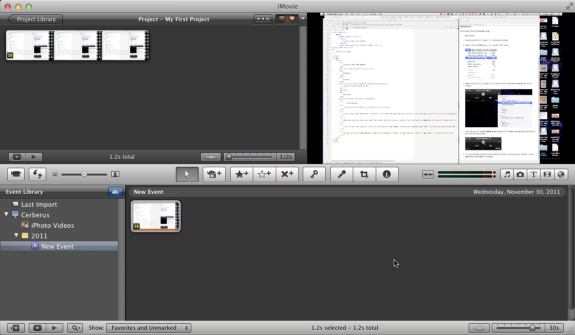

Project Video Guide
For your projects you will create a short 1-minute
video which demonstrates the basic idea of your project. Show off the
key features and ideas. This is a basic guide for creating a simple
video.
Software
Windows
Camtasia Studio (free trial)
QuickTime Player (already installed)
Instructions
-
Launch QuickTime Player (in the Applications folder)
-
Select "New Screen Recording" from the "File" menu:

-
Make sure that you are using the correct audio input (usually
built-in), and that when you speak, the line levels change
(the grey bars under the Big Red Button grow and shrink):

-
Click the big red "record" button in the middle of the window, record your presentation, then click the stop button:

-
You can trim the resulting movie (which, by default, is saved in your "Movies" folder) right there in the QuickTime Player:

-
If you are comfortable using it, you can use iMovie (also installed) to edit your movie (such as removing portions, etc.):

-
Upload your movie to YouTube directly, or attach it in bCourses
if the file is small enough.